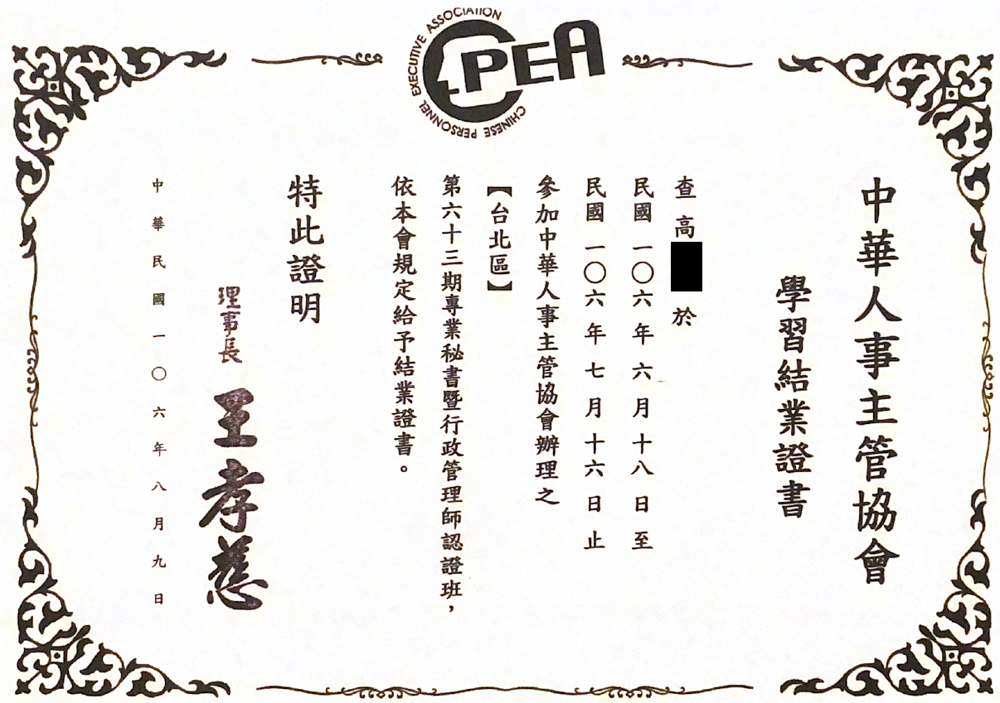
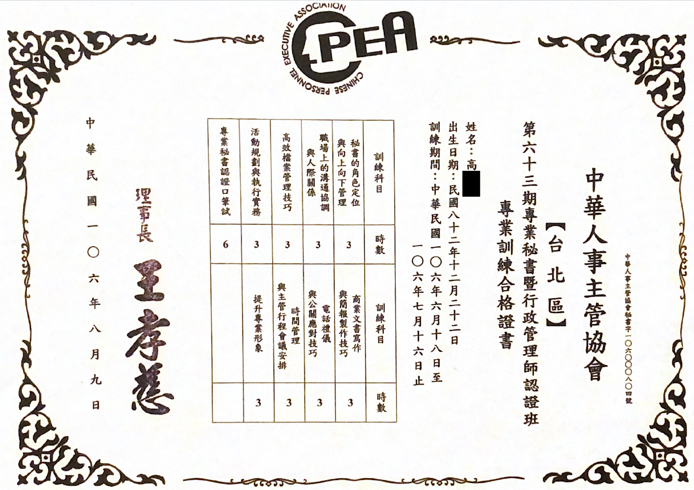
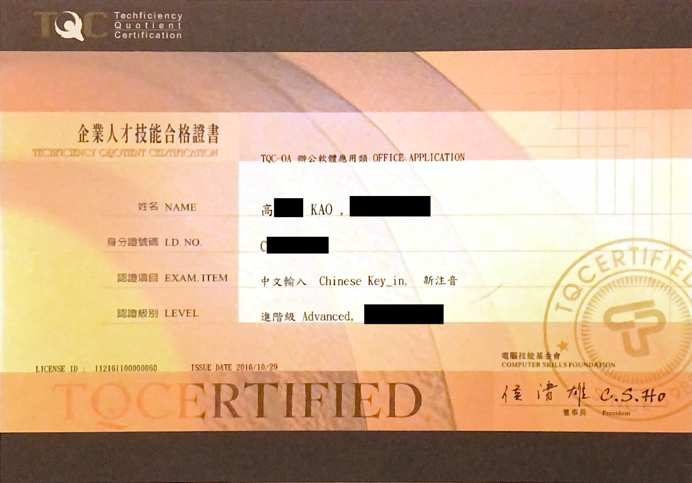
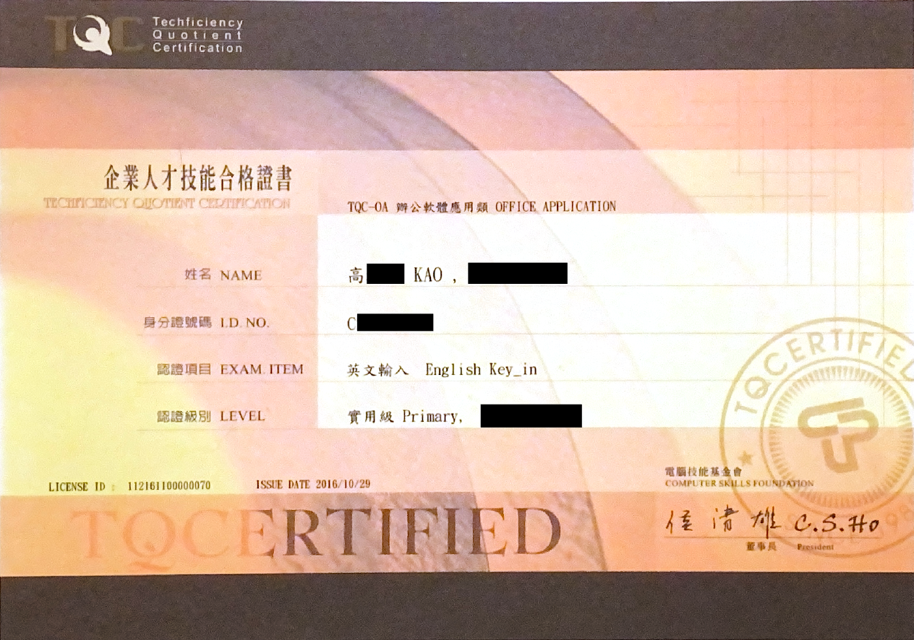

🎵 M•S•慕滋思維特 個人工作室 🎵
M•S•Muzisweet Personal Studio
關於音樂、手工餅乾、甜點的小天地 🎼🍪🍰
思慕滋生的觸動因與眾不同而維繫，將想念的滋味傳遞特別的你/妳
💳 專業證照/課程認證 💳
1️⃣ 中華人事主管協會 專業秘書暨行政管理師認證班
這張證照是慕梓老師從音樂系畢業後，進入上市櫃軟體公司當秘書取得的第一張證書喔!
這是一個跨領域的重要起點經歷，也是在這個時候慕梓老師發現自己對於資料、數據非常有興趣的一個重要啟發點 📈


2️⃣ 中英文打字
還是音樂系學生時，慕梓老師就知道音樂老師不會是我職業人生中的唯一身份，所以就決定開始考取辦公室文書之證照。
結果只考了中英打，文書處理 World、Excel、PPT 都是職場上現學現賣了 📃


1️⃣ Adobe Photoshop 2022
慕梓老師小時候喜歡的不只有音樂還有畫畫喔!
小時候的老師常常喜歡設計自己的家，畫的總是傢俱在不同格局的房子裡擺來擺去還有傢俱的樣子。
(但是老師的媽媽說學音樂不會餓死學畫畫會，所以要二選一。現在，慕梓老師好想告訴媽媽，您錯了!!!)
長大後，老師依舊喜歡，尤其是準備畢業音樂會的那一段時間，
面對自己的畢業音樂會節目單、海報和邀請函，都好後悔怎麼沒有利用時間好好的學與用設計軟體。
離開忙碌的國際學校生活後，二話不說趕快補上，
希望未來自己學生音樂會的每一張音樂會海報、節目單和邀請函都能由自己親自設計屬於我們的回憶!!
1️⃣ TQC+ 程式語言 Python 3
2024年7月，離開忙碌的國際學校工作，趁著還有一點點年輕時間可以揮霍與努力，決定來勇敢地體會一下理工生活啦!
一個很重大的決定也是一個需要很多勇氣的旅程。
慕梓老師覺得即便未來沒有順利成為工程師，練練逐步老化的腦力、邏輯思緒，也是對增進人生精彩的一大幫助呀 🧠
(許多學生及家長知道，直覺反應都是 "老師未來還會繼續教課嗎?" 這是當然的! 任何身份都不會改變我一直會是個音樂老師😘
同時擁有不同身份，是幸運也是磨練💪)
2️⃣ TQC+ 網頁資料擷取與分析 Python 3
努力前往理工生活的第二張證照!!
還記得當時...白天上班上課（假日依舊音樂教室教課時光），下班後趕著上進修課，每次上課抱著快爆炸脹開的大腦...
次次都懷疑...都覺得...當初怎麼會用一個感性多於理性的腦袋，這麼想不開的做了這個決定呢...?!
👉 事實是~
在2017年當祕書時，就對資料庫工程師超級感興趣。在國際學校當組長時，我天天都想自己學程式寫程式（我覺得那個系統實在是太不貼切教育需求了）🙊
3️⃣ TQC+ 軟體開發知識
準備Adobe
PS證照時，剛離開國際學校的工作環境。
第一張程式證照時，順利回到企業界(同時努力上課)，進入一間上市櫃遊戲軟體公司工作。半年聘期，是給自己設的第一道達標門檻。
考取第二張證照時，距離聘期約滿只剩下20天的時間，於是狠心的逼迫自己，一周內考取第二+第三張證照，同時進行著工作交接。
4️⃣ TQC+ Python大數據分析專業人員
通過第一張至第三張證照，順利在聘期約滿前確定自己達標第一道門檻，慕梓老師的眼淚都要滴下來了 !!!
身為一個感性多於理性腦的音樂人，一直覺得自己無法在半年內達標第一階段設定目標，每次上課都好想放棄當個半路逃兵啊 🏃♀️➡️
而，這半年我最最最感謝的除了認真教課一直被我問東問西的老師，另一部份就是當時任職的遊戲公司啦 🎮
雖然因為我個人執著的規劃無緣續留，但心裡滿滿的感恩。
半年裡遇到許多很好的同事、主管，離職後還很幸運的成為了好朋友保持連繫，超級有愛的環境啊 ☺️
更謝謝公司不介意我的學經歷背景並在知道當時的我正在進修準備轉職的情況下願意聘用我 🥰
TQC+ 機器學習
努力中，下一個里程碑 !!!
M•S•= Miss & Meets -> 錯過、想念、遇見，送上最特別的心意、關懷與陪伴 ➕ Muzisweet = Music+sweet -> 一個喜愛烘焙甜點的音樂人
生活酸甜苦辣，離不開音樂述說與陪伴 ; 沒有不散筵席，珍惜仍留下感謝已錯過 ⏳ 觸動的旋律、手工的餅乾傳遞最真誠的關懷與心意甜入心，陪伴彼此每一刻喜怒哀樂 ❤️


程式語言 Python 3-無名字.jpg)
網頁資料擷取與分析 Python 3-無名字.jpg)